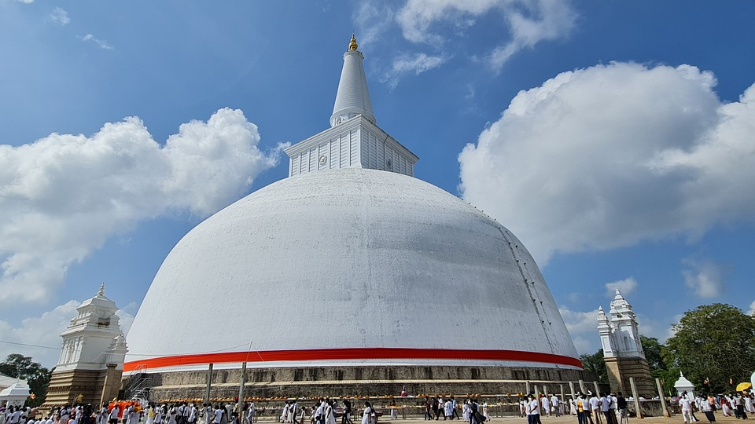
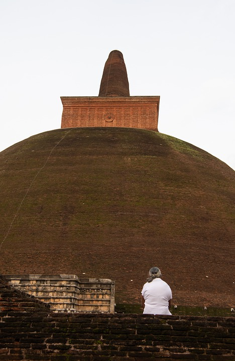
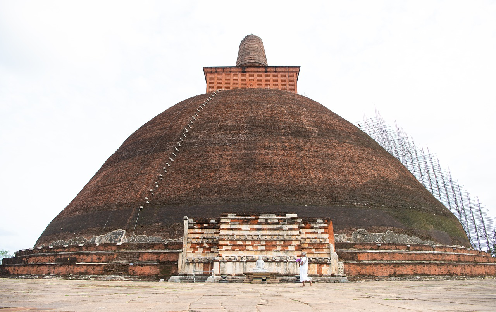
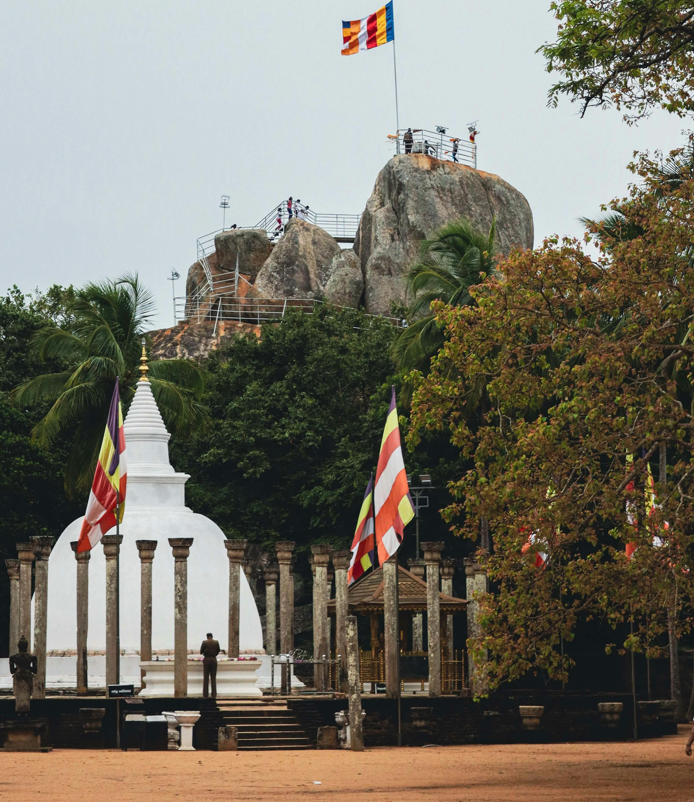
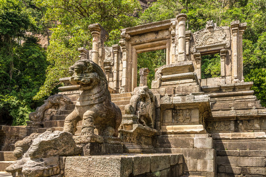

Unveiling Sri Lanka's Timeless Treasures: Journey Through Ancient Destinations
Sri Lanka is rich in history and culture, offering travelers a glimpse into its ancient past through various destinations. Here are some must-visit ancient sites in Sri Lanka:
Anuradhapura
A historical city regarded as one of Sri Lanka's most important archaeological sites. You are taken back in time to a magnificent period of monarchs, kingdoms, and spiritual enlightenment as soon as you enter this historic capital.
A Glimpse into History
Anuradhapura is one of the oldest continuously inhabited towns in the world. It was the capital of Sri Lanka for more than a millennium, from the fourth century BCE to the eleventh century CE. It attracts history buffs and spiritual seekers from all over the world because of its rich heritage and cultural value, which have won it a spot on the UNESCO World Heritage List.
Sacred Stupas and Monastic Ruins
|
 |
 |
 |
The stupas, also known as dagobas, are ancient Buddhist structures that were constructed to honor key moments in Buddhist history or to house Buddha relics. They are one of Anuradhapura's most remarkable features. The city is home to some of the biggest stupas in the world, including as the well-known Jetavanaramaya, Abhayagiriya, and Ruwanwelisaya stupas, all of which are encircled by peaceful, landscaped gardens and rich in exquisite carvings.
Explore the vast complexes of monasteries, temples, and palaces that make up Anuradhapura's old monastic remains; each one provides a window into the city's illustrious past. Admire the magnificent remnants of the Abhayagiri Monastery, which was once a bustling hub for Buddhist study and meditation, or investigate the finely carved moonstones and guardstones that grace the doors of historic temples.
Sri Maha Bodhi - The Sacred Fig Tree

Paying respects to the Sri Maha Bodhi, a sacred fig tree that is thought to have sprung from a cutting of the original Bodhi tree under which the Buddha obtained enlightenment, is an essential part of every trip to Anuradhapura. The Sri Maha Bodhi, revered as the world's oldest known tree, serves as both the center of Buddhist spiritual devotion and a beacon of harmony and peace for everyone who come to see it.
Immerse Yourself in Spiritual Serenity
Beyond its historical significance, Anuradhapura provides visitors with an opportunity to fully experience the peace and serenity of the surrounding area. See the age-old customs of Buddhist monks performing their almsgiving rite at a nearby temple, or take a leisurely stroll along the banks of the Tissa Wewa reservoir after sunset, when the golden tones of the sky reflect off the placid waters.
Plan Your Journey to Anuradhapura
Make sure to take your time seeing Anuradhapura's many wonders and losing yourself in the rich history and culture that this ancient city has to offer as you set off on your journey there. Whether you're interested in spirituality, history, or are just a naturally curious tourist, Anuradhapura promises to provide you with an amazing experience that will enthrall and inspire you.
Anuradhapura is proof of Sri Lanka's rich cultural past and the long-lasting influence of its prehistoric past. With its imposing stupas, revered artifacts, and tranquil environs, it provides visitors with a singular chance to journey back in time and take in the grandeur of a bygone age. Come explore Anuradhapura's treasures and experience the enchantment of this historic city for yourself.
Polonnaruwa
Located in the center of Sri Lanka, Polonnaruwa is a treasure trove of ancient wonders and a UNESCO World Heritage Site. Travel through the ruins of a once-great empire and travel back in time. Towering monuments, finely carved temples, and calm reservoirs all tell the story of a period when the region was prosperous and powerful.
A Glimpse into History
After Anuradhapura's fall in the eleventh and twelfth centuries CE, Polonnaruwa became Sri Lanka's second capital. King Parakramabahu I brought prosperity to the city during this golden age by turning it into a bustling metropolis with splendid palaces, temples, and reservoirs. Today, Polonnaruwa is a global destination for tourists to marvel at its ageless magnificence, serving as a tribute to the architectural prowess and inventiveness of its ancient inhabitants.
Sacred Temples and Royal Palaces

|

|
There are many architectural wonders that highlight Sri Lanka's rich cultural legacy as you visit the historic city of Polonnaruwa. Admire the magnificent sculptures and soaring columns of the Gal Vihara, a rock shrine that is home to four enormous Buddha images that were all painstakingly carved from a single granite boulder. Admire the exquisite reliefs and elegant lines of the Lankatilaka and Tivanka Image Houses, whose antiquated sculptures and frescoes provide an insight into the residents' spiritual lives.
The Marvels of Parakrama Samudra

The magnificent Parakrama Samudra, a huge reservoir constructed by King Parakramabahu I to water the surrounding plains and sustain the city's thriving agricultural, is a must-see attraction for anybody visiting Polonnaruwa. This engineering masterpiece, which covers an area of more than 2500 hectares, is a testament to the sophisticated hydraulic engineering methods of prehistoric Sri Lanka and is now an essential source of water for the area.
Immersing Yourself in Ancient Culture
Beyond its historical significance, Polonnaruwa gives visitors an opportunity to fully experience Sri Lanka's varied culture and customs. Enjoy a leisurely bicycle ride through the ancient city's lush vegetation, where you can see lively markets, amiable inhabitants, and traditional craftsmen using age-old methods. Alternatively, take a gastronomic trip and experience the flavors of real Sri Lankan food, which includes everything from aromatic rice dishes and spicy curries to sweet desserts created with tropical fruits and spices.
Plan Your Journey to Polonnaruwa
Get ready to be mesmerized by Polonnaruwa's enduring beauty and rich cultural legacy as you travel there. Whether you're interested in architecture, history, or are just a curious visitor, Polonnaruwa promises an amazing experience that will leave you in awe of the grandeur of antiquity.
Sri Lanka's rich cultural inheritance and the lasting influence of its ancient civilization are both demonstrated by Polonnaruwa. It provides visitors with a one-of-a-kind chance to journey back in time and take in the magnificence of a bygone age with its majestic temples, royal palaces, and tranquil ponds. Come explore Polonnaruwa's treasures and experience the enchantment of this historic city for yourself.
Dambulla Cave Temple

UNESCO World Heritage Site, Dambulla Cave Temple, a haven of spiritual peace tucked away in Sri Lanka's gorgeous countryside. Explore this historic marvel and go on a journey of discovery. The rich cultural legacy of the island is revealed in the centuries-old rock temples that are covered with colorful murals and towering statues.
A Testament to Devotion
For more than two millennia, the Golden Temple of Dambulla, also known as Dambulla Cave Temple, has been a site of prayer and pilgrimage. It is perched atop a large granite outcrop with a view of the surrounding landscape. This sacred monument, which is carved into the naturally occurring rock caves, is made up of a complex of five caverns that are decorated with over 150 magnificent Buddha statues and colorful frescoes that show scenes from the life of the Buddha and stories from Buddhist scriptures.
Exploring the Cave Complex
You'll be welcomed by the gentle glow of flickering oil lamps and the subtle aroma of incense as you enter the cold darkness of the cave complex. From the enormous Buddha statues and finely carved pillars of the Devaraja Lena (Cave of the Divine King) to the vibrantly colored murals and historic inscriptions of the Maharaja Lena (Cave of the Great Kings), each cave is home to unique treasures.
The Majesty of the Golden Temple
The Raja Maha Vihara (Great Royal Temple), a vast chamber ornamented with a spectacular reclining Buddha statue that is nearly 15 meters long, is located at the center of the cave complex. This magnificent monument, which is the focal point of the temple and represents compassion and enlightenment for Buddhists worldwide, is bathed in golden hues.
Breathtaking Views and Tranquil Surroundings
In addition to its religious significance, Dambulla Cave Temple allows guests to take in the peace and beauty of the surrounding area. Scale the rock's peak for sweeping views of the lush plains and rolling hills below, or take a leisurely stroll around the temple's surrounding gardens, where towering trees and exotic flora offer shade from the tropical sun.
Plan Your Visit to Dambulla Cave Temple
Take some time to become fully immersed in the spiritual importance and rich cultural legacy of Dambulla Cave Temple as you get ready to travel there. Dambulla Cave Temple promises an amazing experience that will leave you inspired and in awe of the grandeur of Sri Lanka's ancient history, regardless of whether you're a devoted pilgrim, an art enthusiast, or just an inquisitive traveler.
The Dambulla Cave Temple is evidence of both the rich cultural tradition of Sri Lanka and the long-lasting influence of Buddhism in the country. Travelers have the opportunity to immerse themselves in the timeless beauty of the land's ancient monuments and connect with its spiritual essence through the beautiful statues, bright paintings, and breathtaking surroundings. So come, explore the splendor of Dambulla Cave Temple, and discover the mystery of this hallowed sanctuary for yourself.
Mihintale

The birthplace of Buddhism in Sri Lanka and a revered center of worship tucked away in the tranquil countryside of the nation. Enter this sacred space and begin a journey through time that will pass by historic monasteries, soaring stupas, and peaceful woodlands where the sounds of enlightenment may still be heard today.
The Birthplace of Buddhism in Sri Lanka
Since Buddhism was brought to the island more than two millennia ago, Mihintale is particularly dear to Buddhists all over the world. Legend has it that the Indian monk Mahinda, an emissary of the ancient Emperor Ashoka, visited King Devanampiyatissa of Sri Lanka here on the sacred hill of Mihintale and taught him the teachings of the Buddha. Since then, devotees and seekers from all over the world have flocked to Mihintale, which is recognized as a site of pilgrimage and spiritual awakening.
Exploring the Sacred Grounds
A multitude of historic monuments and sacred buildings that attest to the island's rich Buddhist past await you as you climb the stairs that lead to the summit of Mihintale. Admire the magnificent Ambasthala Stupa, the site of Mahinda's alleged first encounter with King Devanampiyatissa, and honor the holy artifacts housed within its revered walls. Discover the remains of former monasteries and meditation halls, where monks used to hide from the outside world in order to develop inner serenity and enlightenment.
The Great Mahaseya Stupa and Aradhana Gala
The Great Mahaseya Stupa, a soaring structure that is a center of devotion and reverence for pilgrims and tourists alike, is located in the center of Mihintale. Reach the peak of Aradhana Gala, also known as the "Rock of Invitation," and take in the expansive plains below, where the historic city of Anuradhapura is tucked away among lush vegetation. As you reflect on the eternal wisdom of the Buddha and the mysteries of life, let the soft breeze caress your skin.
Tranquil Forests and Serene Surroundings
In addition to its religious significance, Mihintale provides an opportunity for tourists to fully enjoy the peace and beauty of the surrounding area. Explore the verdant forests that cover the hill's slopes, home to a variety of rare plants and animals that flourish under the tall trees' shade. As you tune into the rhythms of nature, you'll experience a wave of harmony and tranquility as you listen to the sweet singing of birds and the rustle of leaves in the wind.
Plan Your Journey to Mihintale
Take some time to consider the significance of this holy pilgrimage destination and the profound teachings it contains as you get ready to travel to Mihintale. Whether you're a committed Buddhist, a spiritual seeker, or just an inquisitive tourist, Mihintale guarantees an amazing experience that will uplift and inspire you with the strength of faith and dedication.
Mihintale is proof of the teachings of the Buddha's ageless wisdom and the long-lasting influence of Buddhism in Sri Lanka. With its historic sites, tranquil surroundings, and ethereal atmosphere, it provides visitors with a singular chance to set out on a quest for enlightenment and self-discovery. Come explore Mihintale's charms and experience the enchantment of this hallowed pilgrimage spot for yourself.
Yapahuwa

A magnificent archaeological site tucked away in Sri Lanka's stunning scenery. Explore the ruins of an old fortress that was once a representation of strength, majesty, and knowledge as you go back in time.
A Glimpse into History
Yapahuwa gained notoriety in the thirteenth century when it briefly but significantly held the position of capital of Sri Lanka. The fortress was almost impregnable to enemy attacks, built with ramparts, moats, and defensive constructions, perched majestically atop a gigantic granite cliff. Yapahuwa prospered as a hub of governance, trade, and culture under King Buwanekabahu I's reign, drawing academics, craftspeople, and traders from all over the world.
The Magnificent Rock Fortress
You will be met with the majestic ruins of the old fortress as you climb the stone steps that lead to the top of the cliff. Admire the imposing gatehouse, which was formerly the main entrance to the royal palace. It is decorated with elaborate carvings and has stone elephants standing on either side of it. Discover the layout of the audience halls, chambers, and courtyards that were once vibrant with activity and intrigue by exploring the ruins of the royal complex.
The Sacred Shrine of Yapahuwa
The holy shrine of Yapahuwa, where a reclining Buddha statue and a tall stupa remain as silent guardians of a bygone past, is located in the center of the citadel. The shrine is decorated with elaborate carvings and inscriptions carved into the rock face, providing insight into the spiritual activities and beliefs of the prehistoric people. You'll feel at ease and peaceful as you stroll around the shrine's serene grounds—almost as though the past is still very much present.
Panoramic Views and Natural Beauty
Beyond its historical significance, Yapahuwa provides visitors with amazing views of the surrounding landscape, which includes glistening lakes, rolling hills, and lush forests that spread for miles. Stop for a moment to appreciate the wonders of nature, or take a leisurely stroll along one of the lovely paths that meander through the verdant surroundings of the citadel.
Plan Your Journey to Yapahuwa
Take some time to acquaint yourself with the rich history and cultural legacy of this historic citadel as you get ready to travel to Yapahuwa. Yapahuwa promises an amazing experience that will leave you mesmerized and inspired by the grandeur of Sri Lanka's ancient past, regardless matter whether you're a history buff, a nature lover, or just an inquisitive visitor.
Yapahuwa is evidence of the resourcefulness, tenacity, and spiritual awareness of its prehistoric occupants. It provides visitors with a singular opportunity to travel through time and discover the mysteries of Sri Lanka's rich cultural history with its beautiful citadel, revered shrines, and expansive views. Come explore Yapahuwa and experience the enchantment of this historic citadel for yourself.